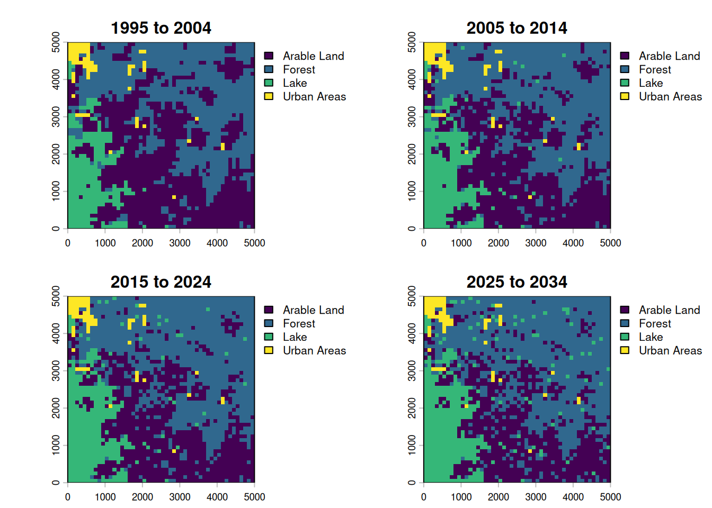
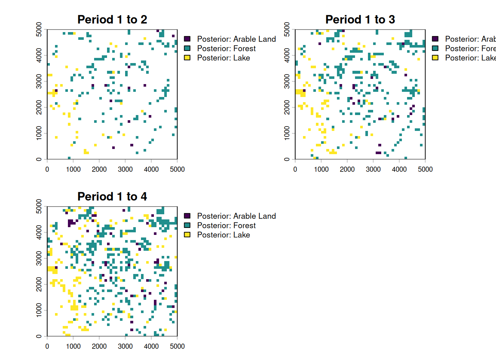

---
config:
flowchart:
useMaxWidth: true
---
flowchart TD
subgraph setup[1. Setup]
direction LR
domain_categories{{ fa:fa-table-list LULC Categorization}}
domain_space{{ fa:fa-globe Spatial Domain }}
domain_time{{ fa:fa-clock Temporal Domain}}
domain_categories --- domain_space
domain_space --- domain_time
end
setup --> preparation
subgraph preparation["2. Ingesting Data"]
direction LR
predictors@{shape : docs, label: "Spatiotemporal Predictors"}
lulc_data@{shape : doc, label: " LULC data \n @ {t, t-1, t-2, ...}"}
ts@{shape : brace, label: " Timesteps: \n t = now \n t-1 = one step in the past \n t+1 = one step in the future"}
style ts stroke:#ccc, stroke-width:2px
predictors --- lulc_data
lulc_data --- ts
end
preparation --> calibration
subgraph calibration["3. Calibration"]
direction LR
varsel[Select Features]
varsel --> markovmods
markovmods["Train Transition<br> Potential Models"]
markovmods --> parametrize_alloc
parametrize_alloc["Estimate Allocation Parameters"]
end
calibration --> estimation
subgraph estimation["4. Prediction + Allocation"]
direction LR
evalmodel["`Evaluate Transition Poten Models @ t`"]
predictions["Transition Potential Maps @ t+1"]
evalmodel --> predictions
changes["Allocate projected land use demand <br> (patch / expand)"]
predictions --> changes
end
estimation --> projection
projection@{shape : terminal, label: "LULC projection\n @ t+1"}
projection -->|Next iteration with t+1 as t| estimation
linkStyle 0,1,3,4 stroke-opacity:0
classDef phase fill:#f9f9f990,stroke:#333,stroke-dasharray:2 4,color:#000000
classDef data fill:#ddf1d5,stroke:#82b366,color:#000000
classDef user_input fill:#fff2cc,stroke:#d6b655,color:#000000
class setup,calibration,preparation,estimation,allocation phase
class predictors,lulc_data,projection data
class domain_categories,domain_space,domain_time user_input
Note: This tutorial expects that you already know about geodata and some central principles of pattern-based land use change modelling.
This file introduces the evoland.plus R package, or evoland.plus for short. evoland.plus builds on the idea that land use change can be predicted from observed change patterns. The likelihood that a location and its neighbors will change state is called transition potential and is estimated per location. A concrete realization of all possible transitions (e.g. forest->grass, grass->forest, etc.) is realized in an allocation across all locations and classes. Because the transition potential is spatially and temporally autocorrelated, an extrapolation must be autoregressive.
Workflow
1 Setup
We’ll use the following packages:
1.1 Creating an evoland.plus database
First, we load the package and create an evoland_db database object: unlike most R objects (e.g. data.frame), this is a mutable object1, meaning we can alter its state like we would with a Python object. This nicely mirrors our persistent database on disk.
If there is no directory at path, we’ll create a new DB: a self-contained folder holding a catalog and its data files, with clearly defined tables. If there is a directory, we resume from where we left off.
db <- evoland_db$new(path = "firstmodel.evolanddb")Go ahead and print the db object. There are already a runs_t and a reporting_t table, which are bare-bones for now but will be used to track our modelling runs and metadata for producing graphs and tables.
db<evoland_db> Object. Inherits from <ducklake_db>
| Catalog: sqlite:firstmodel.evolanddb/catalog.sqlite
| Data Path: firstmodel.evolanddb/data/
| Read Only: FALSE
| Active Run: 0
| Lineage: 0
Tables Present:
reporting_t, runs_t
DB Methods:
checkpoint, commit, delete_from, execute, fetch, get_query, get_read_expr,
get_table_metadata, list_tables, next_id, row_count, transaction
Public Methods:
add_predictor, adjusted_trans_pot_v, create_alloc_params_t, figure_of_merit_v,
fit_full_models, fit_partial_models, generate_neighbor_predictors,
get_crossval_plots, get_obs_trans_rates, get_pred_filter_score,
lulc_crosstab_v, lulc_data_as_rast, pred_wide_predict_v, pred_wide_train_v,
predict_trans_pot, set_full_trans_preds, set_neighbors, set_report,
upsert_new_neighbors
Active Bindings:
coords_minimal, extent, id_run, lulc_meta_long_v, pred_sources_v, run_lineage,
trans_v1.2 Defining our model framework
Before we do anything else, let’s declare the framework of our model:
- Land Use / Cover Categories: A set of land use and/or land cover classes between which changes can occur
- Spatial Domain: A set of coordinates, built from a geographic specification
- Temporal Domain: A set of periods, describing a regular time series
1.2.1 LULC Categories
We define our fundamental LULC classes. The src_classes field maps the underlying data source’s classes to our conceptual categories. Real data sources usually have many more classes than a model needs, so several source classes are typically aggregated into one model class; the synthetic data we use below already come with our four classes.
db$lulc_meta_t <- create_lulc_meta_t(
list(
forest = list(
pretty_name = "Forest",
description = "Areas with lots of trees",
src_classes = 1
),
arable = list(
pretty_name = "Arable Land",
src_classes = 2
),
urban = list(
pretty_name = "Urban Areas",
description = "Where nature goes to die",
src_classes = 3
),
static = list(
pretty_name = "Lake",
description = "Static land use class (except if you're Dutch)",
src_classes = 4
)
)
)1.2.2 Spatial domain
The spatial coordinate points provide the fundamental geographic domain on which our model will operate. We use a dense square raster, but since we register individual coordinate points, we could subset these to any oddly shaped region of interest.
For this tutorial, we do not read real observed data. Instead, synthetic_landscape() simulates a 50 x 50 cell landscape at the origin of Web Mercator coordinates (EPSG:3857), together with the drivers of its change, over three periods. Its grid defines our spatial domain.
landscape <- synthetic_landscape(n_periods = 3, n_cells = 50)
db$coords_t <- create_coords_t_square(
epsg = 3857L,
extent = terra::ext(landscape$lulc),
resolution = terra::res(landscape$lulc)[1]
)You can retrieve coords_t from disk and filter using data.table semantics:
db$coords_t[lon == 2950]Coordinate Table
longitude (x) range: [2950, 2950]
latitude (y) range: [50, 4950]
Key: <id_coord>
id_coord lon lat
<int> <num> <num>
1: 30 2950 4950
2: 80 2950 4850
3: 130 2950 4750
4: 180 2950 4650
5: 230 2950 4550
---
46: 2280 2950 450
47: 2330 2950 350
48: 2380 2950 250
49: 2430 2950 150
50: 2480 2950 50We can also retrieve a minimal representation (id, lat, lon) using an active binding, i.e. a method tied to the database that dynamically computes a property when called:
db$coords_minimal[1:2]Key: <id_coord>
id_coord lon lat
<int> <num> <num>
1: 1 50 4950
2: 2 150 49501.2.3 Temporal domain
We also define our temporal domain. Note that an additional “0th” period is added at the end of the observed range; this is used for labelling predictor data as static.
db$periods_t <- create_periods_t(
period_length_str = "P10Y", # 10 year period
start_observed = "1995-01-01",
end_observed = "2020-01-01",
end_extrapolated = "2030-01-01"
)2 Ingesting Data
2.1 LULC Data
The synthetic landscape changes through a known process, so that the model has a signal to learn: urban land grows next to existing urban land where accessibility is high, forest turns into arable land on good sites next to arable land, and arable land returns to forest on poor, remote sites next to forest. ?synthetic_landscape states the process exactly; the model below does not get to see it, only the maps and the drivers.
lulc_colors <- data.frame(value = 1:4, color = c("#91B690", "#EB9486", "#F3DE8A", "#CBC6D2"))
plot(landscape$lulc, nc = 3, col = lulc_colors)
We now extract the generated values at our coordinates using extract_using_coords_t, giving us a tabular representation of id_coord, id_period, src_class tuples. In a second step, we join in a long representation of the LULC metadata, associating id_lulc with src_class.
synthetic_at_coords <- extract_using_coords_t(landscape$lulc, db$coords_t)
synthetic_joint_meta <-
synthetic_at_coords[, .(
id_coord,
id_period = sub(".*[^0-9]", "", layer) |> as.integer(), # "id_period=1" -> 1
src_class = value
)][
db$lulc_meta_long_v, # map from id_lulc to src_class
on = .(src_class),
nomatch = NULL
]We now have the LULC data in an almost canonical format. We need to add information on which id_run this data belongs to: run 0 is the base run, providing observed data (see db$runs_t for details). The call to as_lulc_data_t ensures that the data we want to insert actually conforms to the form we are expecting.
db$lulc_data_t <- as_lulc_data_t(synthetic_joint_meta[, .(
id_run = 0L, # Base run ID
id_period,
id_lulc,
id_coord
)])Now that we have LULC data in our DB, we can derive data from it, e.g. we grab a view where a transition occurred, i.e. the anterior and posterior LULC ID are not the same.
db$trans_v[id_lulc_anterior != id_lulc_posterior] id_period id_lulc_anterior id_lulc_posterior id_coord
<int> <int> <int> <int>
1: 3 1 2 9
2: 3 2 3 13
3: 3 1 2 17
4: 3 1 2 18
5: 3 2 1 19
---
372: 3 1 2 2407
373: 3 1 2 2436
374: 3 1 3 2458
375: 2 1 2 2459
376: 3 1 2 24932.2 Add Predictors and Neighbors
You have seen above how extract_using_coords_t can be used to transform a SpatRaster into a tabular form. It can also be used with SpatVector objects, and the resulting tables need not just be LULC data: we use it to extract the drivers of the synthetic landscape as predictors. Two of them, accessibility and site_quality, drive the change; random_nuisance does not, and a good model should learn to ignore it.
The drivers do not change over time, so we store them under the static period 0. db$add_predictor() registers each predictor’s metadata and data in one go. The metadata holds a fill_value used to define what value should be used at a coordinate point with no explicit data set - e.g. if a square kilometre does not have a population count set, we can infer that it should be zero.
plot(landscape$drivers, nc = 3)
drivers_at_coords <- extract_using_coords_t(landscape$drivers, db$coords_t)
for (driver in names(landscape$drivers)) {
db$add_predictor(
pred_data_raw = drivers_at_coords[layer == driver, .(id_coord, id_period = 0L, value)],
name = driver,
fill_value = 0,
description = "Driver of the synthetic landscape, see ?synthetic_landscape"
)
}Statistical models like GLMs or random forests lack inherent spatial concepts, so we explicitly calculate neighborhood relations for each coordinate to create spatial predictors (e.g., “number of neighboring forest cells within 100m”). This is done by creating a neighbor lookup table (db$set_neighbors and then counting the number of neighbors within each distance break class and land use category (db$generate_neighbor_predictors).
db$set_neighbors(
max_distance = 1000,
distance_breaks = c(0, 300, 1000),
quiet = TRUE
)
db$generate_neighbor_predictors()Messages
Computed 659800 neighbor relationships in 1 chunk(s) Appended 8 neighbor predictor variables with 42724 data points
Have a look at the predictor metadata we have defined, it now contains new rows for the neighbor predictors:
db$pred_meta_tPredictor Metadata Table
Number of predictors: 11
Key: <name>
id_pred name
<int> <char>
1: 1 accessibility
2: 9 id_lulc_1_dist_[0,300)
3: 5 id_lulc_1_dist_[300,1e+03]
4: 8 id_lulc_2_dist_[0,300)
5: 4 id_lulc_2_dist_[300,1e+03]
6: 11 id_lulc_3_dist_[0,300)
7: 7 id_lulc_3_dist_[300,1e+03]
8: 10 id_lulc_4_dist_[0,300)
9: 6 id_lulc_4_dist_[300,1e+03]
10: 3 random_nuisance
11: 2 site_quality
8 variables not shown: [pretty_name <char>, description <char>, orig_format <char>, sources <list>, unit <char>, factor_levels <list>, data_type <fctr>, fill_value <char>]3 Calibration
For consistency across different model packages, evoland.plus uses the mlr3 machine learning and statistics environment. For a hands-on introduction, see mlr3 by Example.
3.1 Eligible Transitions and Predictor Pruning
We filter transitions eligible for modeling based on a minimum number of observed occurrences, and exclude the lake, which cannot change.
db$trans_meta_t <- create_trans_meta_t(
db$trans_v,
min_cardinality_abs = 20,
exclude_anterior = 4 # the lake
)
db$trans_meta_tTransition Metadata Table
Total transition types: 4
Viable for modelling: 4
Total observed transitions: 376
Key: <id_lulc_anterior, id_lulc_posterior>
id_trans id_lulc_anterior id_lulc_posterior cardinality frequency_rel
<int> <int> <int> <int> <num>
1: 1 1 2 254 0.67553191
2: 2 1 3 31 0.08244681
3: 3 2 1 35 0.09308511
4: 4 2 3 56 0.14893617
frequency_abs is_viable
<num> <lgcl>
1: 0.0508 TRUE
2: 0.0062 TRUE
3: 0.0070 TRUE
4: 0.0112 TRUEBecause each transition may be modelled using different predictors (aka features), we start out by setting the trans_preds_t table to the full cross product of viable transitions and predictors. We then carry out a feature selection step in get_pred_filter_score, which here is used with a variable importance filter - an mlr3 Learner is passed that returns an importance score for each predictor. We then set is_selected from the score and assign the scored table back to db$trans_preds_t. The assignment is an upsert: it updates the is_selected fields and adds the score column to the DB table for reporting purposes.
# set full crossproduct of transitions - predictors
db$set_full_trans_preds()[1] 44
# return importance scores for each predictor - transition combination
trans_pred_scored <- db$get_pred_filter_score(
filter = mlr3filters::FilterImportance$new(
learner = mlr3::lrn("classif.rpart")
)
)
# deselect the low scorers; keep predictors that couldn't be scored
trans_pred_scored[, is_selected := importance > 5 | is.na(importance)]
db$trans_preds_t <- trans_pred_scoredMessages
Processing 4 transitions... Added column(s) to `trans_preds_t`: importance (DOUBLE)
3.2 Transition Models
Now we fit partial models using training/validation splits, allowing for a goodness-of-fit estimation using mlr3 Measures. We fit a first series of models using a featureless learner, i.e. only estimating the response from the target variable (did a transition occur?) probability distribution. We then fit an rpart recursive partitioning and regression learner. Next, fit_full_models() reads the partial models stored in db$trans_models_t, chooses the best model for each transition based on goodness of fit, and refits each chosen model on all available predictor data. Assigning the result back to db$trans_models_t stores these full models for the extrapolation step.
db$trans_models_t <- db$fit_partial_models(
learner = mlr3::lrn("classif.featureless"),
measures = c("classif.auc", "classif.acc"),
sample_frac = 0.7,
seed = 666
)
db$trans_models_t <- db$fit_partial_models(
learner = mlr3::lrn("classif.rpart"),
measures = c("classif.auc", "classif.acc"),
sample_frac = 0.7,
seed = 666
)
db$trans_models_t <- db$fit_full_models(
select_score = "classif.auc",
select_maximize = TRUE
)Messages
Fitting partial models for 4 transitions... Fitting partial models for 4 transitions... Fitting full models for 4 transitions...
3.3 Transition Rates and Allocation Parameters
As a constrained pattern-based model, we need to provide transition rates to the DinamicaEGO allocator. In a simple approach, we can extrapolate the rate of each transition from the observed data:
db$trans_rates_t <-
db$get_obs_trans_rates() |>
extrapolate_trans_rates(periods = db$periods_t)We estimate allocation parameters, which determine the shape and size of new patches, respectively which fraction of converted land use is in new versus expanded patches. This estimation procedure is not unbiased and hence a single estimate may not be enough: normally, we would perturb the estimate, write each perturbed set onto an id_run of its own, and identify the best parametrization. For simplicity, we now just take the estimate for granted; create_alloc_params_t() returns it for the active run, here the base run id_run=0.
db$alloc_params_t <- db$create_alloc_params_t() # estimated for the active id_run 0Messages
Computing allocation parameters for 4 transitions across 2 periods... Processing period 1 -> 2 Processing period 2 -> 3 Aggregating parameters across periods... Computed allocation parameters for 4 transitions (id_run=0)
4 Prediction + Allocation
For this tutorial, we will use the CLUMPY backend for a self-contained stochastic allocation that does not require the presence of DinamicaEGO as an external solver.
allocate(
db,
id_periods = db$periods_t[is_extrapolated == TRUE, id_period], # all extrapolation periods
allocator = alloc_clumpy_spec(),
select_score = "classif.auc",
select_maximize = TRUE
)Messages
Allocating with CLUMPY: run 0, periods 4 Predicting transition potential for 4 transitions Predicting transition 1/4 (id_trans=1) Predicting transition 2/4 (id_trans=2) Predicting transition 3/4 (id_trans=3) Predicting transition 4/4 (id_trans=4) CLUMPY: period 3 -> 4 CLUMPY method: uPAM Changed 169 of 2500 cells
4.1 Visualization
Finally, we can extract the simulated LULC maps into SpatRaster objects to visualize them.
labels <- db$periods_t[
id_period != 0,
paste0(year(start_date), " to ", year(end_date))
]
plot_maps <-
db$lulc_data_as_rast() |>
categories(
layer = 0, # set for all layers
value = data.frame(id = 1:4, name = db$lulc_meta_t$pretty_name)
) |>
setNames(labels)
plot(plot_maps)
Due to the extrapolated transition rates, the last step shows a similar difference as exists between the first three periods. We can also show the cumulative difference like so:
changes <-
c(
ifel(plot_maps[[1]] != plot_maps[[2]], plot_maps[[2]], NA),
ifel(plot_maps[[1]] != plot_maps[[3]], plot_maps[[3]], NA),
ifel(plot_maps[[1]] != plot_maps[[4]], plot_maps[[4]], NA)
) |>
categories(
layer = 0,
value = data.frame(id = 1:4, name = paste("Posterior:", db$lulc_meta_t$pretty_name))
) |>
setNames(paste("Period 1 to", 2:4))
plot(changes)